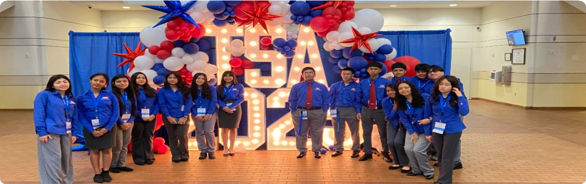

Speak and lead
Explore events where you present ideas, lead a meeting, or work with others to respond to a situation.

You research a career.You write an application.You interview if you advance.
Individual · Cover letter, resume, and interview
Career Prep
You will prepare an application for a future technology career.
Explore Career PrepYou research both sides.You prepare for a selected topic.You present opposing views.
Team of 2 · Debate-style presentation
Challenging Technology Issues
You and a partner will explain opposing views of a technology issue.
Explore Challenging Technology IssuesYou study meeting procedures.You take individual tests.You run a meeting if you advance.
Team of 6 · Individual tests and team meeting
Chapter Team
Your team will demonstrate how to run a formal TSA meeting.
Explore Chapter TeamSelecting a leadership topicPreparing a team responsePresenting to judges
Team of 3 · On-site preparation and team presentation
Leadership Strategies
Your team explains how it would handle a challenge faced by TSA chapter leaders.
Explore Leadership Strategies3–5 minutes
Write and deliver your own prepared speech.